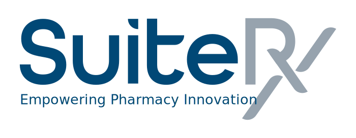

Kevin Andrin
Summary
Practical and versatile individual with a wide variety of professional
experiences. Adept at motivating self and others.
Work Experience
-
Custom Design Supervisor

SuiteRx
Nov 2019 - Dec 2023
- Supervise and lead a team of custom design specialists
-
Assign tasks, set priorities, and ensure that deadlines are met.
-
Provide guidance, mentorship, and training to enhance team members'
skills and performance.
-
Work closely with clients to understand their design requirements
and preferences for labels, med sheets, and other forms.
-
Facilitate communication between the design team and clients to
ensure that designs align with client expectations.
-
Senior Implementation Specialist
SuiteRx
Sep 2016 - Oct 2019
-
Collaborated with pharmacy clients to transition to the SuiteRx
platform, ensuring a smooth and efficient implementation process.
-
Worked closely with pharmacy staff to gather requirements, configure
the system, and customize features to meet specific needs.
-
Collaborated closely with pharmacy teams to ensure seamless
transitions from previous systems to SuiteRx, minimizing disruptions
to daily operations.
-
Software QA Engineer
Dynata
Apr 2011 - Aug 2016
-
Developed and executed comprehensive test cases and reports for
software testing, ensuring thorough coverage of functional
requirements.
-
Collaborated with software development teams and project managers to
ensure the quality and stability of mobile apps and websites.
-
Documented test results and defects, providing clear updates on
testing progress and software quality to stakeholders
Education
Certifications
- Google Analytics Individual Qualification